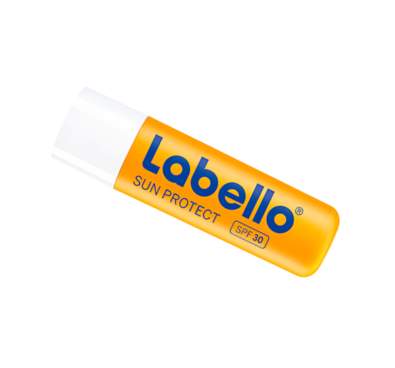

Hverdagens helte til intensiv pleje og beskyttelse
Labello - E
Plejeeffekt
Labello E-vitamin tilfører fugt og giver vandfast beskyttelse med solfaktor 30, der bekæmper UVA- og UVB-strålernes skadelige virkning på huden. Denne fugtgivende formula indeholder blødgørende solsikkeekstrakt og E-vitamin, der effektivt beskytter dine læber mod solens skadelige UV-stråler. Den understøtter også hudens eget immunsystem, så læberne bliver glatte, jævne og altid er beskyttet. Virkningen på huden er dermatologisk testet.
Ingredienser
Blødgørende solsikkeekstrakt, solfaktor 30.
Farve og glans
Labello E dækker blidt læberne med et vandfast lag af fugtgivende solbeskyttelse med antioxidanter og en naturlig farveløs finish.
Anvendelse
Påføres direkte på læberne før og under ophold i solen for at tilføre fugtighed og beskytte mod solens skadelige UV-stråler